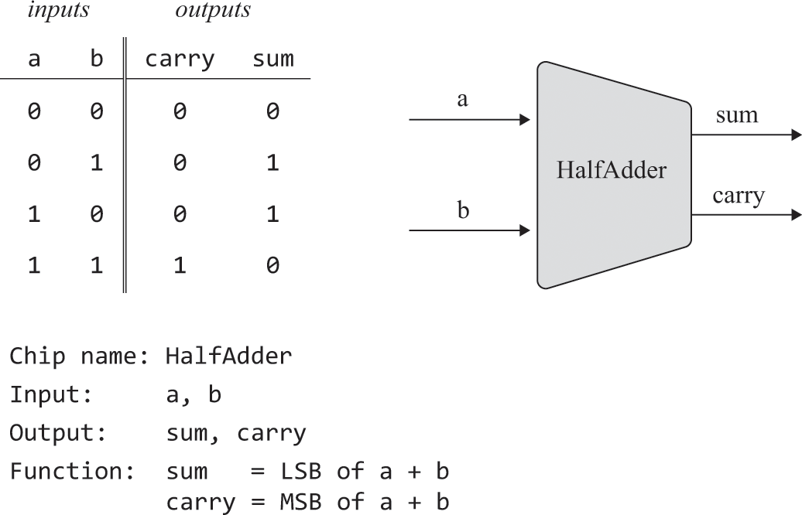
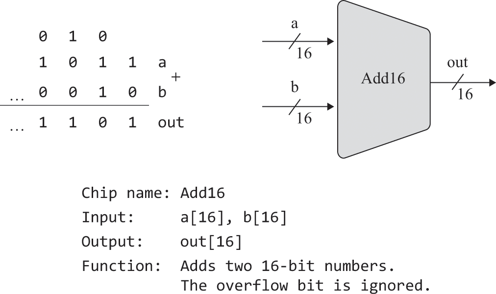
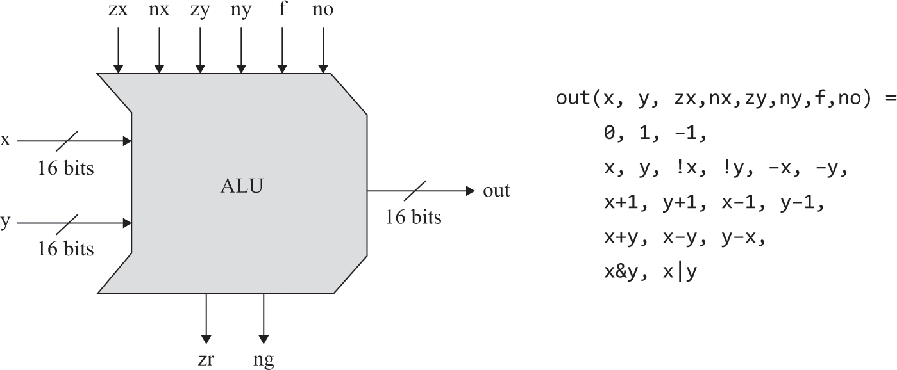
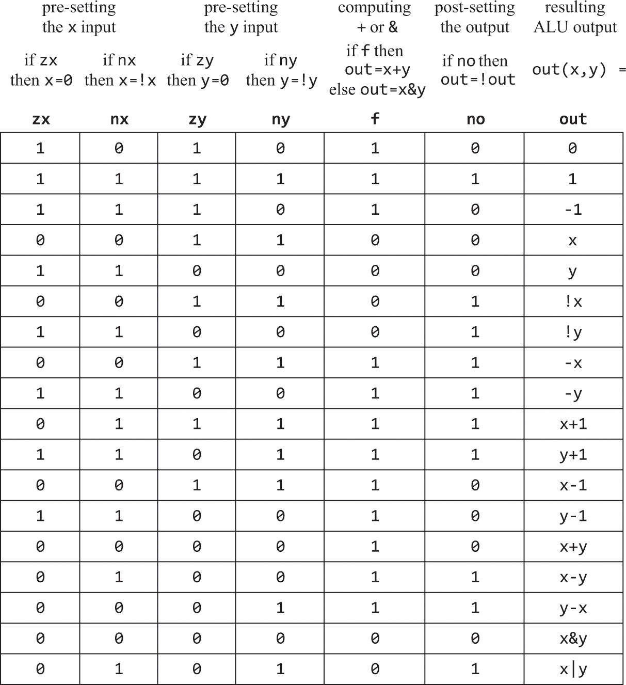

1.2 Boolean Arithmetic
Arithmetic Operations
- Computers must be able to perform:
- Addition
- Sign Conversion
- Subtraction
- Comparison
- Multiplication
- Division
Binary Numbers
-
Using the decimal system, we can say that a number is just the sum of each digit in base 10, ie, each digit is multiplied by 10 to the index of the digit (starting from 0 on the right)
- For example, 6083 can be expressed as: $$ 6083 = 6 \cdot 10^3 + 0 \cdot 10^2 + 8 \cdot 10^1 + 3 \cdot 10^0 $$
-
The same numbers can be broken down for each base, base two for the case of binary numbers
- For example, the number 19, expressed in binary is: $$ 10011_2 = 1 \cdot 2^4 + 0 \cdot 2^3 + 0 \cdot 2^2 + 1 \cdot 2^1 + 1 \cdot 2^0 = 19_{10} $$
Fixed Word Size
- Computers are finite machines that have a fixed size for representing numbers
- Expressed in bits - 8, 16, 32, 64, etc
- For example, an 8 bit register can code 2^8 = 256 different things
- Therefore, an n-bit binary system can code 2^n different things
Binary Addition
- When adding binary numbers, we start from the rightmost bit (least significant bit) and move towards the left
- If the sum of two bits is 2 (10 in binary), we write down the 0 and carry the 1 over to the next more significant bit
- If the sum is 3 (11 in binary), we write down the 1 and carry the 1 over to the next more significant bit
-
If there is a carry out of the leftmost bit, it's an overflow.
-
Consider the binary numbers 1011011 and 1110011. Here's how we add them, from right to left:
- 1 + 1 = 0 with a carry of 1 (10 in binary).
- 1 (from carry) + 1 + 1 = 1 with a carry of 1 (11 in binary).
- 1 (from carry) + 0 + 0 = 1 with no carry.
- 1 + 1 = 0 with a carry of 1.
- 1 (from carry) + 1 + 1 = 1 with a carry of 1.
- 1 (from carry) + 0 + 1 = 0 with a carry of 1.
- 1 (from carry) + 1 + 1 = 1 with a carry of 1.
-
The carry out of the leftmost bit (bolded) is an overflow and is generally discarded in fixed-size binary arithmetic.
Signed Binary Numbers (Positive and Negative Numbers)
- Signed numbers essentially take the size of a regular register, and halves it (allowing the negative compliment to exist as well)
- To check whether or not a value is positive or negative, we look at the most significant (left most bit)
- If 0, then positive
- If 1, then negative
- To express a number in binary as it’s negative, we flip each bit (1s become 0s and vice versa), then add one, starting from the right most bit (add 1 binary, not decimal)
- This method is called Two’s Compliment
- This poses an issue with overflow errors, as when it happens, a positive number is then expressed as a negative one
- This means that we can just treat subtraction as a special case of addition
- Consider 5-7
- This is the same as 5 + (-7)
- If we add their resulting binary numbers( 0101 + 1001 ), we get 1110, which is indeed the binary code of -2
Adders
- Add bits together
- Half adder adds two bits
- Full adder adds three bits
- Adder adds two n bit numbers
- Incremented adds 1 to a given number
Half Adder
- A half adder is a digital circuit that performs the addition of two binary digits.
- It has two inputs (for the two bits being added) and two outputs (for the sum and carry).
- The sum output represents the XOR of the two inputs.
- The carry output represents the AND of the two inputs.


Full Adder
- A full adder is an extension of the half adder, designed to handle the addition of three bits -- the two bits being added, plus an incoming carry from the addition of the previous pair of bits.
- It has three inputs (two bits for addition and one carry input) and two outputs (the sum and the carry).
- The sum output represents the XOR of the three inputs.
- The carry output is true if any two or all three of the inputs are true.

Adder
- To add n-bit numbers, we use a series of n full adders, each handling the addition of one pair of corresponding bits and the carry from the previous pair.
- This setup is often called a ripple-carry adder because the carry 'ripples' from one bit to the next.
- The carry-out from each full adder is the carry-in for the next.
- An overflow occurs if there's a final carry-out from the last full adder, because there's no (n+1)th bit position to hold it in the n-bit result.

Incrementor
- Adds 1 to a given number
- This allows fetching the next instruction from memory
Arithmetic Logic Unit
- Computes a set of arithmetic and logic operations
- Consists of two input integers and size 1bit control bits, which tell the ALU what operation to perform on the input integers
- These control bits can be manipulated to allow for even more operations than initially realised
- This is an example ALU that operates on two 16 bit integers


Example - x-1
- The Goal: We want to compute the function
x - 1forx = 27. In other words, we want to subtract 1 from the number 27. - Setting Up the Inputs: To do this, we first feed the 16-bit binary code of 27 into the
xinput of the ALU. Since we are subtracting 1 fromx, theyinput doesn't matter in this case. - Setting the Control Bits: We set the ALU's control bits to
001110. Let's break down what each bit does:zx = 0: Leavesxas it is.nx = 0: Does not negatex.zy = 1: Setsyto 0.ny = 1: Negatesyto become -1 (since negating 0 in two's complement gives -1).f = 1: Chooses the addition operation forout = x + y(which in this case isx + (-1) = x - 1).no = 0: Leaves the output as is.
- The Operation: These settings essentially tell the ALU to leave
xunchanged, negateyto -1, addxand-1, and leave the result as is. - The Output: Given these control bit settings, the ALU should output the binary code representing 26, which is
x - 1.